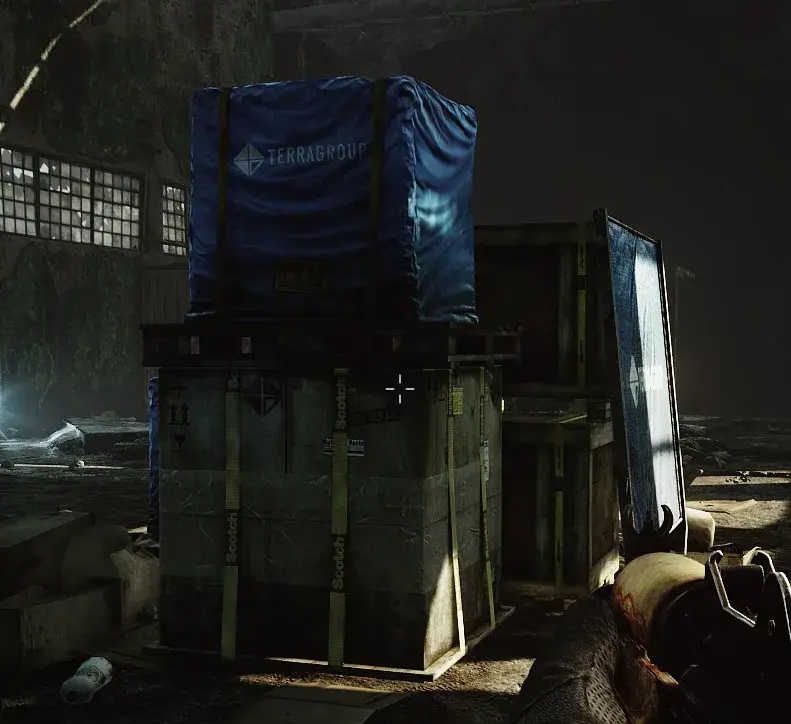
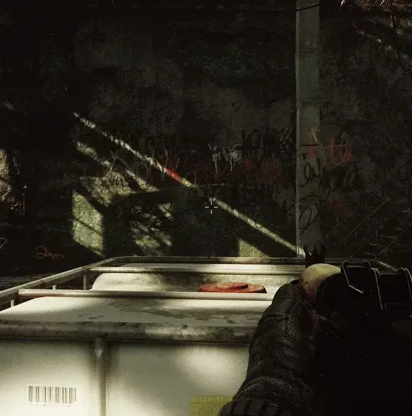

Simple Crosshair
- Downloads
- 52,142
- Favourites
- 43
- Mod lists
- 42
Notice: I’m stepping back from my SPT mods for now and have added some known community authors in the case that I am out of touch, which is very likely to happen in next months. These authors are not obligated to anything, just want to make sure that someone can add a maintainer in the future. My SPT projects were started to keep me occupied after a death in my immediate family and I’ve lost interest in THE CITY for now.
Makes point-firing much easier, and hey, I don’t judge. Optional (default off) dynamic position mode moves the crosshair to where the gun is pointing instead of being locked into the middle of the screen – works with blind-fire, left shoulder, and Realism stances!
Auto-hides somewhat intelligently, currently:
- While aiming
- During certain movement actions, like sprinting, breaching a door, or crawling
- When you don’t have a firearm, melee weapon, or grenade in your hands
- On interactions being available or the perception dot is displayed
- When the gesture menu is open

The Default Crosshair (with some boxes)

With optional (turned off by default) dynamic positioning!
Installation
- Drag folder from zip file directly into your SPT-AKI install folder
Configuration
-
Crosshair Image: The image to load out of the plugin directory, lists all found .png files on game launch
-
Show Crosshair: If the crosshair should be shown
-
Crosshair Color: Adjust the color and opacity of the crosshair
-
Crosshair Size: Adjust the size of the crosshair. Image will fit into the square bounds.
-
Crosshair X/Y Offset: Adjust the offset of the crosshair outside of the exact middle. Good for custom crosshairs where the middle of the image is not the aim point.
-
Crosshair Fade Time: Adjust the fade in/out time on show/hide
-
Enable Dynamic Crosshair Position: Instead of just being a static image in the direct middle, dynamically reposition with weapon facing
-
Center Radius Behavior: What to do if the crosshair is/out of the center radius
- Hide Inside: Hide crosshair when in the center circle, good for only showing when the weapon is obstructed
- Hide Outside: Hide crosshair when outside the center circle, good for ignoring when weapon is way outside
-
Center Radius: The radius of a centered circle to do the above behavior on
- Try ~100 with Hide Inside, to act only as a warning
- Try ~300 with Hide Outside, to ignore when the weapon isn’t facing forward
-
Keyboard Shortcut: A keyboard shortcut to press
-
Shortcut Behavior: What to do when the keyboard shortcut button is pressed
- Press Toggles: Shows and hides the crosshair, taking the “Show Crosshair” option as an initial value
- Show While Holding: Shows the crosshair while the shortcut button is held down. A little wonky right now.
Recommended Other UI Mods
- Tyfon’s UI Fixes
- DrakiaXYZ’s Equip from Weapon Rack, Quick Move to Containers, Quest Tracker, Task List Fixes
- ChooChoo’s Trader Modding and Improved Weapon Building
- CJ’s Stash Search, which I have contributed to
- My other mods Quick Weapon Rack Access and Player Encumbrance Bar
Version
1.3.0
- Update for SPT 4.0.0
Version
1.2.2
Changelog
- Bump version for SPT 3.11
- Fix warning from BepInEx
SHA-256: 7e0ebee8f267c077a0e6860346560adecf5ad44c8564528c943d24706495a173
Version
1.2.0
Changelog
- Update for SPT 3.10.x
SHA-256: 5b3aadf41b69ca27af0b506e822ea4483c267f22c8cf279594aceb190ed536e6
Version
1.1.3
For SPT 3.9.* and above. May work on versions after.
Changelog
- FIX: Duplicate crosshairs appearing
SHA-256: c63f2cdc47b68b54fca9269fc125e4508c04b9fc6c51e0835bd704cef08508f5
Version
1.1.2
For SPT-AKI 3.9.*, though other versions may work
Changelog
- Update to 3.9.* (Thanks PhatDave and stckytwl!)
SHA-256: 357da6518c64da9075c58dbe1819cfeab910236e79d0abad0ee049c500178a4a
Note: Not much testing has been done on this.
Known issue: Crosshair persists through end-of-raid, will have to take a look.
Version
1.1.1
For SPT-AKI 3.8.*, though other versions may work
Hope you’re enjoying the mod!
Changelog
- FEATURE: Option to hide crosshair when outside or inside a radius from the center in dynamic positioning mode
- Good for hiding crosshair when it’s wildly out of place, or only showing the crosshair as an obstruction warning
- FEATURE: Far easier to swap the default crosshair image out and now ships with 16 additional crosshair images
- ENHANCE: Dynamic crosshair position should be slightly better at behavior around showing/hiding
- FIX: Resolved issue with keybind behavior option “Show While Holding”, should now work while pressing additional keys other than the bound
May yet still be buggy, please report bugs on GitHub, on the SPT-Hub in the comments, or ping me in the SPT Discord.
SHA-256: 3f98a8f0408a0d8fa78d9dcb99d5327a406a2617326bffa0510ff05561fceaf3
Version
1.1.0
For SPT 3.8.0 and 3.8.1, though other versions may work
Changelog
- FEATURE: Dynamic positioning mode (optional, default off) which dynamically positions the crosshair according to gun facing
- FEATURE: New optional keyboard shortcut to show/hide the crosshair
- ADDED: Fade In/Out time option, set to 0 to disable fade
- FIXED: X/Y offset not being able to be set negative
- FIXED: Potential NRE on scene change
Note
- Likely buggy! Please report all issues!
- Previous config will be overwritten with new defaults
Known Issues
- The “Show While Holding” keyboard shortcut option is a bit wonky, only shows while that key is the only one being pressed
Version
1.0.0
For SPT-AKI 3.8.0 or 3.8.1, though it may work with other versions
Initial release. May be buggy, let me know how it goes!
Please report bugs on GitHub, on the SPT-Hub in the comments, or ping me in the SPT Discord.